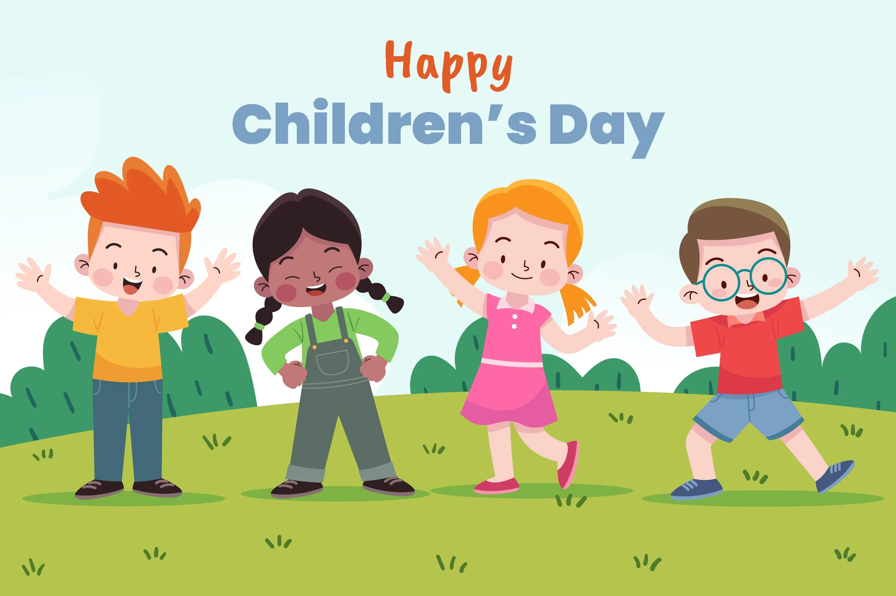

World Children’s Day
World Children’s Day was first established in 1954 as Universal Children's Day and is celebrated on 20 November each year to promote international togetherness, awareness among children worldwide, and improving children's welfare.
November 20th is an important date as it is the date in 1959 when the UN General Assembly adopted the Declaration of the Rights of the Child. It is also the date in 1989 when the UN General Assembly adopted the Convention on the Rights of the Child.
The work of Janusz Korczak formed the basis of the Convention on the Rights of the Child.
2023 Theme: For every child every right.
On this website there is more information about these rights here (link to Children’s Rights page) and on the Activities page asking you to think about and draw or write about your safety. You have the right to be safe. Being Safe. Whoever you are, you have the right to be safe (Link to Activities page)
2022 Theme: Inclusion, For Every Child
We all can’t be included in everything. A sports team can only have a set number of players, but there can be lots of teams. A car can only hold a limited number of people safely. Some things can only be done by some people. A book written in Spanish can only be understood by people who speak Spanish, but people who know Spanish and the language you speak can translate it for you. Whoever e all have the right to equality in inclusion.
Young people are so important in helping each other and people older than them know that inclusion of every child makes the world a better place.
Share link: One team for children’s rights https://youtu.be/ZQHh9Z1T3_Q
We are all different but we are all equal and entitled to the same rights and being included like other young people is important. As long as we don’t hurt anyone, being different can be so good. We all have our own ideas and ways of celebrating and doing things. We can learn so much from each other, we can be happy with who we are and together we can help everyone feel included.
“A hundred children, a hundred individuals who are people--not people-to-be, not people of tomorrow, but people now, right now--today.” Korczak, J.
On the Activities page, there is something you can do to help more children feel included. Link to Activities Page